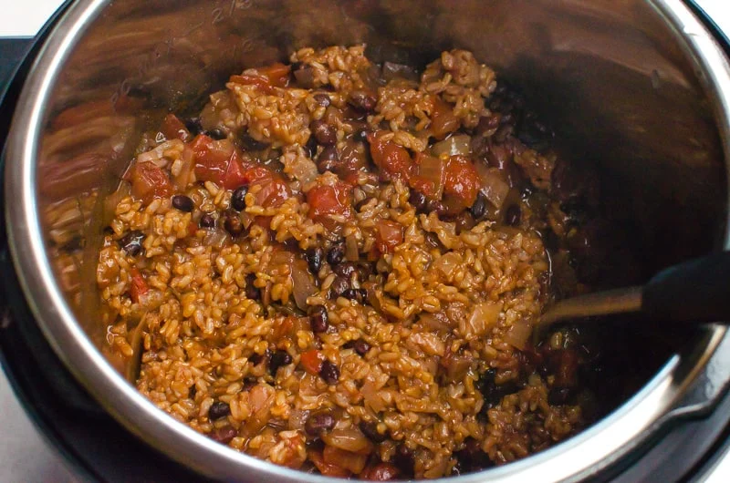

Instant Pot Rice and Beans

Ingredients
- 1 large onion - chopped
- 2 cups brown rice - rinsed
- 1 cup dried black beans - rinsed
- 4 cups water or broth
- 1.5 Tbsp cumin
- 1 Tbsp garlic powder
- 2 tsp chili powder
- 1.25 tsp salt
- 28 oz can diced tomatoes
- 1 bunch cilantro - chopped
- Hot sauce (optional)
Instructions
- Add ingredients to pot in order: onion, brown rice, black beans, water, cumin, garlic powder, chili powder, salt, and diced tomatoes. Do not stir
- Close lid and Pressure Cook on High for 22 minutes
- After cooking is finished slide steaming vent valve to release pressure
- Add cilantro and gently stir. If rice or beans are still a little crunchy, close lid and let sit for 10 minutes
- Serve warm with hot sauce
Home